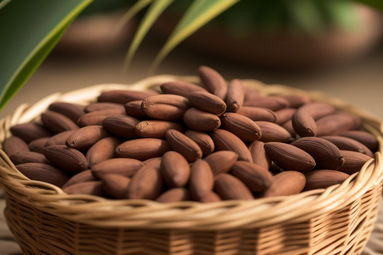

Selamat datang di Choco Chaca! Tempat berbagai macam cokelat berkualitas singgi ada di sini, berdiri sejak tahun 1986, kami terinspirasi oleh keindahan dan kekayaan rasa cokelat dari berbagai belahan dunia yang dipadukan dalam produk-produk istimewa kami.
Kualitas adalah prioritas, dimana cokelat kami terbuat dari bahan-bahan alami, dipilih langsung dari perkebunan yang berkomitmen pada keberlanjutan dan etika kerja. Kami menggunakan biji kakao pilihan terbaik berasal dari sumber-sumber yang mendukung kesejahteraan petani lokal, sekaligus menjaga keseimbangan ekosistem.
Kami ingin menyebarkan semangat keindahan cita rasa dan pengalaman menikmati cokelat kepada setiap konsumen. Dengan memperkenalkan berbagai varian rasa, kami berupaya menciptakan produk yang tak hanya menghidupkan cita rasa cokelat murni tetapi juga memberikan pengalaman unik bagi pecinta cokelat di setiap gigitan.
Dibuat dengan penuh perhatian dan dedikasi, cokelat kami menghadirkan rasa yang autentik dengan berbagai varian unik, mulai dari rasa klasik hingga perpaduan eksperimental yang inovatif. Kami terus bereksperimen dan berinovasi untuk menghadirkan sesuatu yang berbeda dan membuat setiap momen menikmati cokelat menjadi lebih bermakna.
Kami percaya bahwa cokelat bukan sekadar makanan—ini adalah pengalaman, kenangan, dan perasaan yang kami ingin bagikan dengan Anda. Selamat datang di keluarga besar kami, di mana setiap potongan cokelat menciptakan momen istimewa.